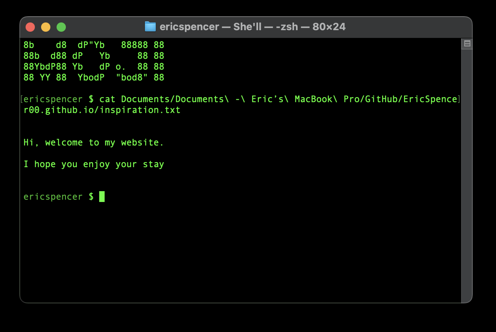

nano "inspiration.txt"▐
You may notice that this website looks like a CLI or terminal. This is entirely intentional and actually reflects my own terminal that I use on macOS. So, what you're seeing is a reflection of my own workspace in form of a website. Have a look:
You can see I love ASCII art and the color of terminal green.
nano "history.txt"
Go back to Main Page
Last updated: